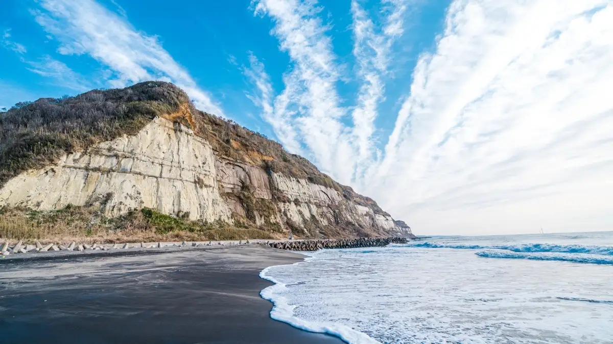
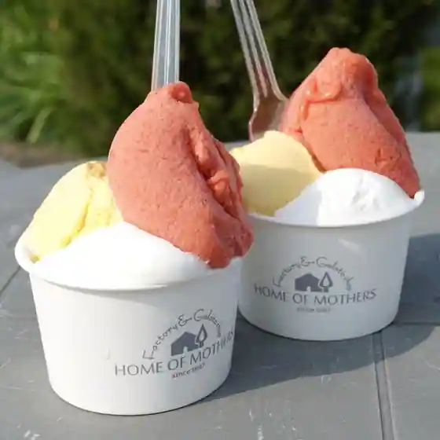
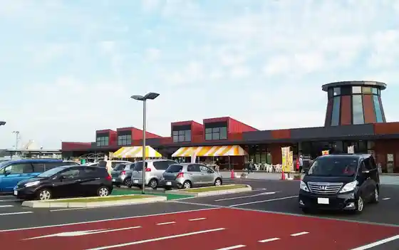
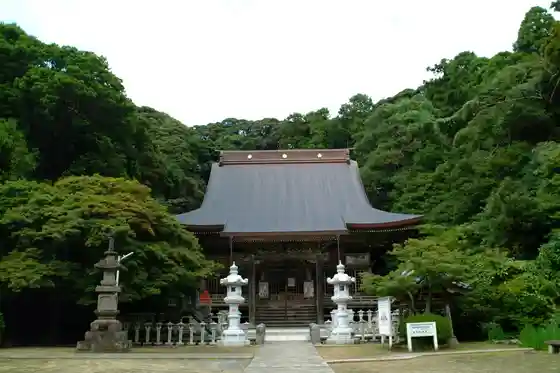

Japan / Chiba / Asahi
Asahi · Chiba
Asahi
Highlighted on the Chiba map.

Asahi City Hall



Sights · Things to do · Places to eat · Places to stay · Day-to-day services
Nearby in Chiba: ← Abiko · Chiba →
Other towns: Abiko · Chiba · Chonan · Choseimura · Choshi · Funabashi · Futtsu · Ichihara · Ichikawa · Ichinomiyamachi · Inzai · Isumi · Kamagaya · Kamogawa · Kashiwa · Katori · Katsuura · Kimitsu · Kisarazu · Kozaki · Kujukuri · Kyonan · Matsudo · Minamiboso · Mobara · Mutsuzawa · Nagara · Nagareyama · Narashino · Narita · Noda · Oamishirasato · Onjuku · Otaki · Sakaecho · Sakura · Sanmu · Shibayama · Shirako · Shiroi · Shisui · Sodegaura · Sosa · Tako · Tateyama · Togane · Tomisato · Tonosho · Urayasu · Yachimata · Yachiyo · Yokoshibahikari · Yotsukaido
All towns in Chiba · Back to all prefectures